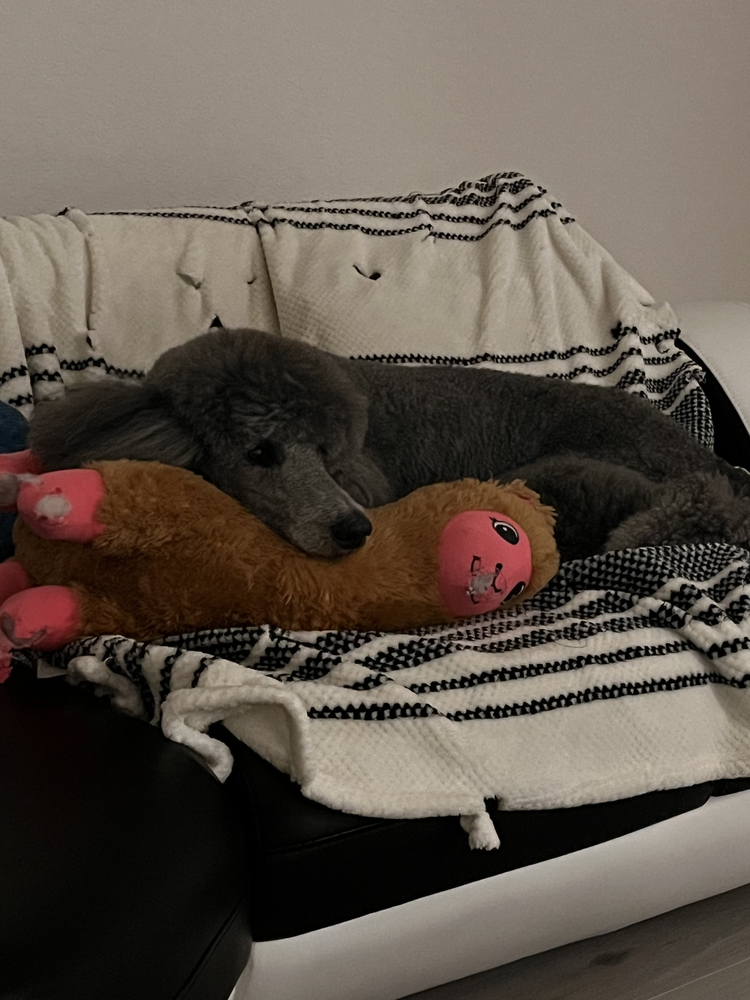

Introduction
Today is my dog Louis’s 8th Birthday!!! In honor of him, this post will be centered around Dalle’s ability to recreate images - specifically images of him. We will be both analyzing the accuracy of the image that is recreated and also noticing the prompt it creates to describe the image.
LLAMA Louis
Below is the first picture we will be tasking Dalle to recreate. I give it the initial prompt of the following: “Today we are going trying to recreate images of my dog Louis. I want you to pay as much detail to all of the items in the image as well as the orientation of the dog. We will start out with recreating this uploaded image.”
Below is the image:

When I first put into Chatgpt it recreated it as the following:

Not only did they butcher Louis’s face, but they also made the plushy the wrong type of animal. Because of this, I went to the prompt Chat GPT generated every time it generated an image. It displayed the following: “A detailed recreation of a cozy indoor scene featuring a gray standard poodle lying on a couch. The dog rests its head gently on a brown plush toy with pink feet and a pink face, which has visible wear. The couch is covered with a soft white blanket that has black striped patterns. The dog’s body is stretched out comfortably, with a relaxed and peaceful expression. The lighting is soft and warm, enhancing the calm atmosphere of the scene.”
From the description you can realize that the reason ChatGPT messaged it up is that it simplified the llamma stuffed animal to just a “plush toy.” This can suggest two things a) ChatGPT has a limited amount of stimuli it can describe and recreate, b) Chat GPT doesn’t have the ability to realize what kind of animal the plush toy is, or C) it doesn’t regard it as an important detail.
To test these options I told ChatGPT “its a llamma not a dog plush toy” and it generated the following image:

This image is significantly more accurate than the first generation. Not only did it get the toy correct, it also mimics Louis’s facial expression and the zoom of the picture better. This POTENTAILLY suggests that Chat GPT may have returned to the original reference when creating the llama to then incorporate said llama into the recreation. If that is what Chat GPT then it would help us rule out some of the hypotheses from the last image. It would prove that Chatgpt does have the ability to realize what kind of animal the plush toy is and that it also isn’t limited on the amount of stimulus it can generate. Thus, it would mean that on the original scan of the image - it didn’t regard the type of animal the toy was as an important detail.
To figure this out lets run through more scenarios.